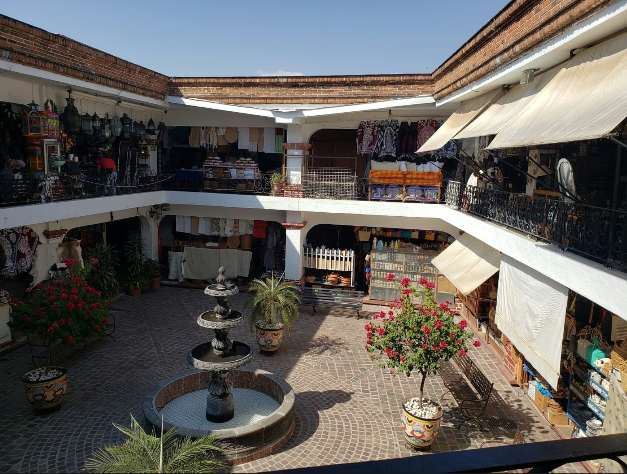
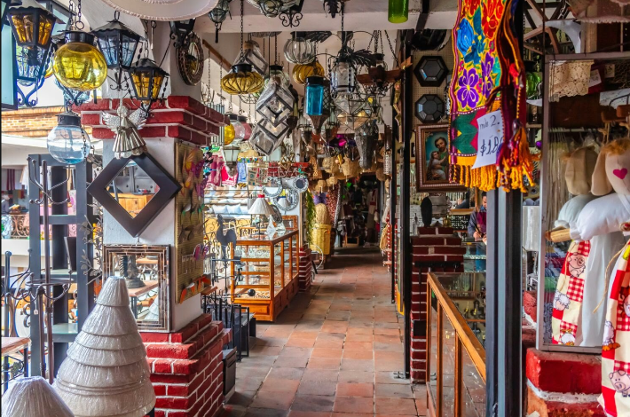

El Mercado de Artesanías de Valle de Bravo se encuentra en la avenida Benito Juárez, en la colonia San Antonio, a unas tres o cuatro cuadras del centro y de la plaza principal, por lo que puedes llegar caminando sin problema. Fue construido en mil novecientos ochenta y cuatro con la finalidad de fomentar, proteger y difundir el trabajo realizado por los artesanos de Valle de Bravo, y es un edificio de dos pisos donde se concentran las producciones artesanales de tres etnias importantes que son los matlatzincas, los mazahuas y los otomíes.

En este mercado puedes encontrar una gran variedad de artesanías hechas a mano como cerámica de barro café tradicional, cerámica de alta temperatura, vajillas, tazas, ollas, floreros y piezas decorativas tanto tradicionales como contemporáneas, además de deshilados, tejidos de lana y bordados elaborados principalmente por artesanas mazahuas y otomíes, como rebozos, quexquémetl, manteles, servilletas, caminos de mesa y tapetes etc.